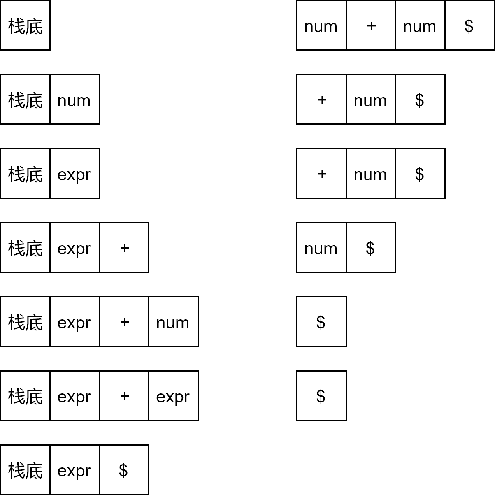
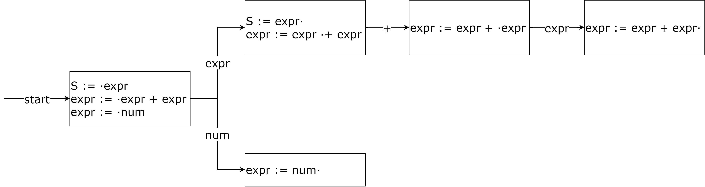

前言
早在去年11月下旬，我就想自己实现一个LR语法分析器，可自身主观能动性不足，拖延了一个多月的时间才正式开工。终于在上班前夕的自我隔离期间，花了两个下午的时间完成了一个LR(0)语法分析器的雏形，因而写下该篇日志记录一下。
什么是LR(k)语法分析技术
L/R/k分别是什么意思
- L的意思是from Left to right，即从左到右来分析输入
- R的意思是构造出的是最右推导，即Rightmost
- k的意思是在语法分析决定时向前看k个符号，k省略则为1
自底向上的语法分析技术
LR语法分析技术是一种自底向上的语法分析技术，自底向上也就是从一个非终结符串开始规约的过程，每次归约会使用一个产生式将其中的一个子串（称为句柄）替换为该产生式左侧的非终结符，中间产物被称为是一个最右句型。例如，对于以下的文法：
expr := expr + expr
expr := num
输入符号串num + num经历的归约过程如下，每次归约过程中的句柄已加粗：
num + num -> expr + num -> expr + expr -> expr
移入-归约语法分析技术
LR语法分析技术是一种移入-归约语法分析技术，其使用一个符号栈来保存文法符号，还有一个输入缓冲区来保存还未分析的符号串。对于上述输入串的分析过程如下。

什么是LR文法
注意到，在移入-归约语法分析过程中，句柄总是能够在符号栈的栈顶被识别，这样的文法就是LR文法。而识别句柄时，我们所能够依据的信息也就是右侧的待分析的输入串，LR(k)文法中的k也就是需要输入串中符号的数量。
LR语法分析技术
LR(0)语法分析技术
LR分析法的核心是确定归约的时机。当符号栈中的符号串满足某条产生式的时候，这就可能是一个归约的时机。在普通的LR(0)分析法中，这就是一个确定的归约时机。实际上，我们能够当前LR(0)语法分析器的状态用若干个项目来表示，项目包含一条产生式和一个点，其表示了当前识别到该产生式的位置。
通常来说，对于某个LR文法，我们会构建一个增广文法，使得文法有唯一的接受产生式，即接受符号只出现在一条产生式左侧。对于前文中的例子，我们会添加一条产生式S := expr和一个新的接受符号S。
此时，初始的项目为S := ·expr，该项目在接受到符号expr的时候会转移到项目S := expr·，这也就是接受项目，接受项目在获得$符号时即表示接受成功。更为一般的，对于每个项目x := A·yB，接收符号y能够转移到项目x := Ay·B。同时，初始项目还包括两个等价的项目，expr := ·expr + expr以及expr := ·num，这也就是NFA中的ε转移。
接下来就是NFA转DFA算法了，我们可以将一组项目集合看作新的DFA的一个状态，从而得到LR(0)类DFA表示。

但是，LR文法很显然是正则语言的超集，因而是不可能通过一个DFA或者NFA来表示的。该DFA表示能够告诉我们在遇到不同符号时该移入还是归约。我们可以对移入-归约语法分析技术做一些小改动，将符号栈更改为状态栈，初始栈中存在初始状态。当前状态也就是栈顶的状态，当遇到输入符号时，
- 首先查看DFA中当前状态是否能通过该符号转移到下个状态，如果可以，将新状态入栈。
- 如果当前状态中包含一条可归约的产生式，则应该回到接收该产生式右侧第一个符号时的状态，然后将归约生成的符号所转移到的状态入栈。
SLR语法分析技术
在LR(0)语法分析中，当前状态中只要有归约项目，我们就会进行归约操作。这样会遇到两个问题：
- 如果当前项目中还有移入项目，就会出现移入-归约冲突
- 如果当前项目中有多个归约项目，就会出现归约-归约冲突
SLR语法分析尝试用归约产生式左侧符号的follow集来解决这两类冲突：
- 对于移入-归约冲突，如果follow集与移入符号不相交，冲突即可解决
- 对于归约-归约冲突，如果这多个归约产生式左侧符号的follow集不相交，冲突也可解决
SLR实际上是SLR(1)，其向前看了一个字符，其中的S的意思是simple，实际上，SLR分析法确实通过下一个字符和归约产生式左侧符号follow集的比较来选择移入还是归约，实现也非常简单，可以说是实至名归。
LR(1)语法分析技术
在SLR语法分析中，直接使用follow集来判断是有些武断的，这是归约的必要条件而非充分条件。因为follow集的计算与状态无关，只是一种筛选的方式。LR(1)分析法中将向后看的这1个符号加入到了状态中，具体的做法是在产生式中加入其后继符号。例如，初始产生式则会变为S := expr, $，因为S的后继符号只可能是$。在计算项目集闭包的时候，对于某个项目x := A·yB, follow_set
- 其直接产生的等价项目为
y := ·C, first(B follow_set) - 其接受符号
y产生的项目为x := Ay·B, follow_set
LALR语法分析技术
在LR(1)分析法中，会产生一些状态，他们只有follow_set有区别，这一类项目集被称为同心项目集，LALR语法分析法的主要改进就是合并这些同心的项目集，减少冗余状态。我们将LR(1)项目集中忽略了follow_set的部分称为LR(0)项目集。
由于没有亲自实现LALR语法分析器，其实现的算法在此先省略了，以后有时间再补上。一种朴素的算法是在LR(1)项目集的基础上合并同心项目集；另一种内存开销更小的算法是通过follow_set的传播来实现的。
小结
按照语法分析的能力来排序，LR(0) < SLR < LALR < LR(1)。按照状态的数量来排序，LR(0) = SLR = LALR < LR(1)。